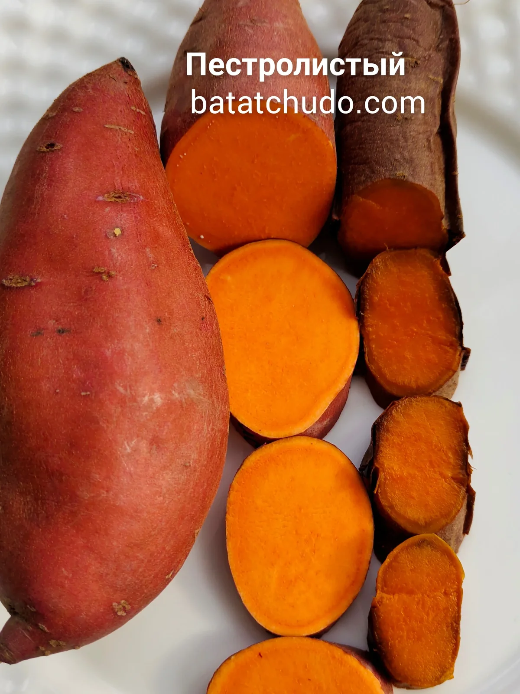
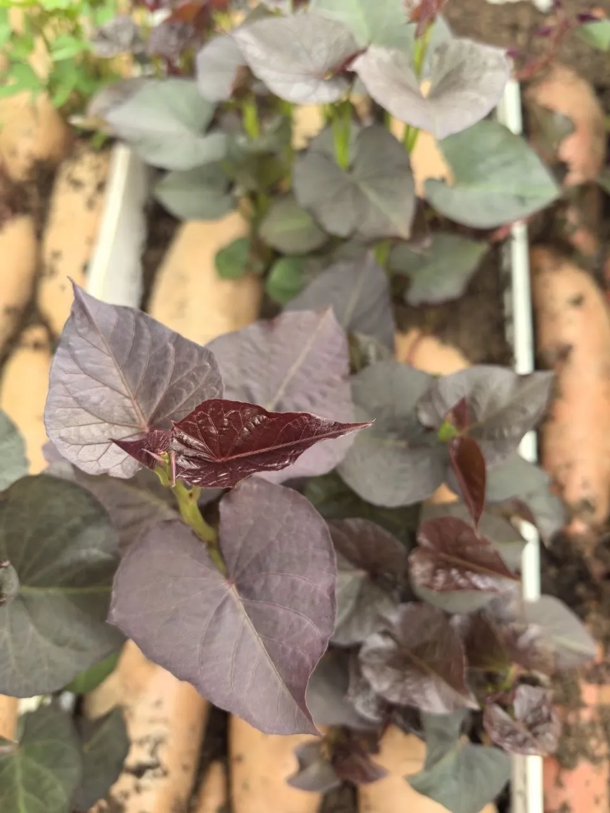

Описание сорта
Пестролистый (Variegated) — декоративный сорт батата с розовой мякотью. Главная ценность — красивые пёстрые листья, которые украшают сад. Корнеплоды съедобны, но уступают столовым сортам.
Галерея


Пестролистый (Variegated) — декоративный сорт батата с розовой мякотью. Главная ценность — красивые пёстрые листья, которые украшают сад. Корнеплоды съедобны, но уступают столовым сортам.

Свяжитесь с нами для заказа клубней и саженцев. Доставка по всей России.